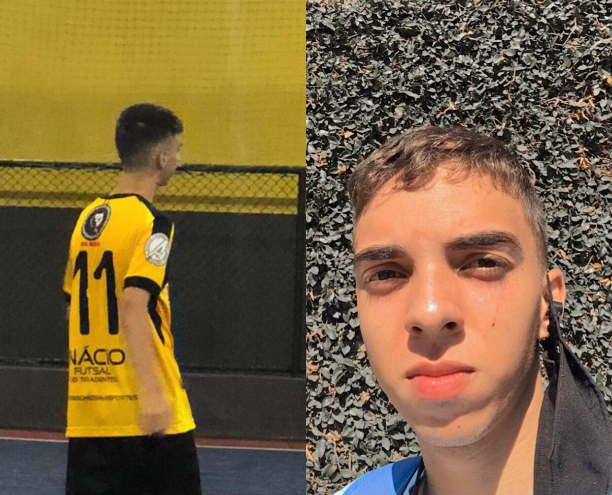

O que é a " FanPageBR UCL"
A FanPage BR UCL surge de um amor pelo Futebol e a maior competição esportiva do mundo (Uefa Champions League).
Desenvolvedor
Desenvolvedor (Pedro Neto). Eu conheci o esporte aos 10 anos através de meus pais. Ficava horas e horas assistindo aos jogos da UCL. Aos 15 anos fazia parte de 2 times de bairro, aos 16 cheguei a ficar 2 semanas em um clube de futsal profissional, mas fui dispensado. Como todo garoto, sonhava em ser jogador, mas aos 17 anos tive que largar o sonho para ajudar em casa. Pensando nisso, com os conhecimentos obtidos através da Faculdade SPTech School desenvolvi uma FanPage para demonstrar o carinho pela competição e ao esporte.
